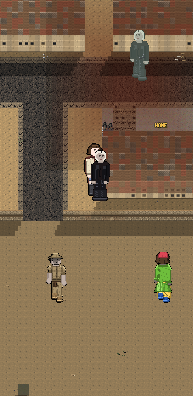
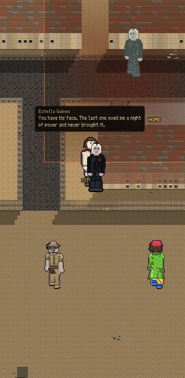

Both pictures are the walked street, from the game's own camera.
"Why does everything have to happen the first second of the game or even be in the demo?"


She does not stop you. Nothing pops up, nothing waits for a tap, and you can walk straight past her. If you do, she says it to your back and never again.
| before | now | |
|---|---|---|
| How long before the first person talks | 0 seconds | 60 |
| Lines said in your first minute | 2 | 0 |
| Lines said after that | 93 | |
| Lines said in the demo | 0 |
The third row is the one that matters. Shutting everybody up would pass the first two and give you a dead town. The street talks exactly as much as it did, it just waits until you have walked.
| Somebody talking TO you, like her | 6 steps |
| A rumour about somebody else, overheard | 4 steps |
| The street talking among itself | 7 steps |
You said a rumour should be overheard and not told to your face, so a story about somebody else carries the shortest distance. You have to be near enough to catch it. Those three numbers used to be six copies of one number scattered around, and one of them disagreed with the rest.